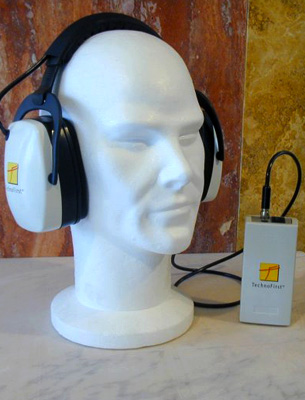

Casque antibruit actif NoiseMaster®
NoiseMaster PRO | NoiseMaster COM | Spécifique
Présentation
Les protections auditives de la gamme NoiseMaster sont
destinées aux personnes travaillant dans des environnements
TRÈS BRUYANTS. Ils intègrent la technologie ANR dont l'utilisation opérationnelle a
débuté dans l'armée française il y a plus de
dix ans avec l'équipement des pilotes de chars d'assaut et des
hélicoptères afin que ceux-ci puissent comprendre
clairement les instructions malgré le bruit assourdissant de
leurs engins.
L'ANR s'est rapidement développé dans les
armées du monde entier, les services civils,
l'aéronautique et se développe dans le monde
industriel pour améliorer les performances des EPI auditifs
traditionnels. On estime qu'à ce jour plus de 500 000
personnes utilisent le système de protection auditive ANR
inventé et breveté par TechnoFirst en 1986.
Principe
La technologie ANR repose sur une électronique miniaturisée (2) qui est placée à l'intérieur de la coquille du casque. Cette électronique est connectée d'une part à un petit microphone (1) qui capte le bruit ambiant et d'autre part à un petit haut parleur (3) qui génère le contre bruit à proximité de l'oreille de façon à atténuer considérablement le bruit qui arrive au tympan.
Performances
L'ANR est
principalement efficace dans les basses fréquences et
s'installe donc dans des coquilles plastiques qui traitent les
moyennes et hautes fréquences.
Le graphe ci-contre met en évidence l'atténuation
supplémentaire apportée par l'ANR par rapport au passif
: pour un bruit extérieur "rouge", le bruit entendu avec une
protection traditionnelle est en "jaune" et celui entendu avec une
protection NoiseMaster est en "bleu".
L'atténuation d'une protection auditive avec ANR se situe entre
30 et 45 dBA selon le bruit ambiant.
Avantages de l'ANR : Protection, Confort et Efficacité
Atténuation exceptionnelle des basses fréquences qui génèrent fatigue, stress, maux de tête et des troubles généraux du métabolisme du corps.
Amélioration de la compréhension de la parole car les fréquences de parole (1000 à 8000 Hz) ne sont plus masquées par les basses fréquences (63 à 1000 Hz). Suppression de la sensation d'isolement.
Possibilité d'intervention de longue durée dans des environnements très bruyants.
L'ANR et les autres systèmes Anti Bruit «électroniques»
L'ANR est différent des autres
procédés électroniques dits « actifs »
proposés sur le marché qui sont en
réalité des systèmes "passif activés"
encore appelés "à atténuation asservie".
Ces derniers équipements sont dotés d'un clapet ouvert
fixé sur la coquille du casque. Dès que le bruit
atteint 85 décibels, le clapet se ferme et le casque devient
une protection auditive passive. La fermeture du clapet est
déclenchée "activement" par une électronique
qui réagit au bruit, mais la protection auditive reste
purement passive puisqu'il n'y a aucune protection autre que celle
apportée par la coquille.
Seul l'ANR a un effet "actif" de réduction du bruit.
Exemples d'application
Principaux secteurs d'utilisation de l'ANR dans le monde des EPI auditives :
Industries bruyantes, cimenteries, verreries, forges...
Maintenance de machines en opération, générateurs, turbines...
Personnel au sol des aéroports
Conducteurs d'engins de TP et opérateurs de machines et équipements bruyants
...et tous les environnements bruyants, depuis les journalistes de TF1 sur les grands prix F1 jusqu'aux jardiniers utilisant quotidiennement des débroussailleuses et autres tondeuses.